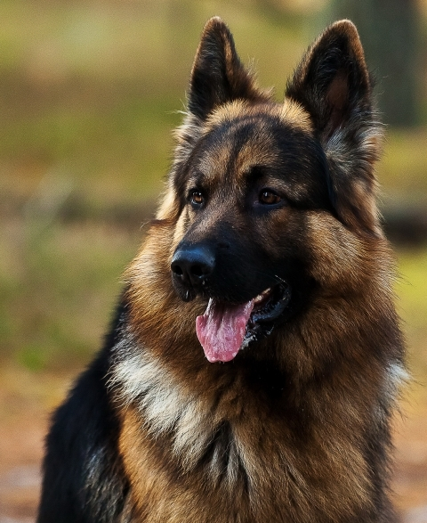

Породы собак
Померанский шпиц
Родиной померанского шпица является Германия, а именно, северная прусская провинция Померания. От этого места произошло название породы – Померанский шпиц.
Миниатюрный шпиц обладает весёлым игривым нравом, отличным слухом и преданным характером. В этой породе замечательно соединились декоративная внешность и бойкий характер: несмотря на малый рост, шпицы могут за себя постоять, они не пугливы и даже отважны.
Шпиц любит движение, он всегда за прогулку и игру, и никогда не выберет диван. С ним можно до бесконечности кидать мячик или палку, этот пушистый комочек будет в диком восторге. Физические нагрузки нужны шпицу не только для развлечения, но и для здоровья — сказывается его прошлое. Также собака иногда любит полаять. Померанский шпиц может без устали играть с детьми, активен и энергичен, но в то же время не доставляет особых хлопот, так как слушается своего хозяина. Эта порода отличается сообразительностью и преданностью, а также желанием угодить хозяину. Померанский шпиц хорошо поддаётся дрессировке.
Шпицы могут быть очень упрямыми, поэтому дрессировать их надо с раннего возраста. У них есть склонность к доминированию, собаки пытаются подчинить себе и человека, и более крупную собаку. Проявляются нотки эгоизма, при появлении нового питомца может быть проявление агрессии, недовольства, но при одномоментном заведении хорошо уживается с другими животными.
Немецкая овчарка

Рождение породы припало на тот момент, когда в Германии активно развивалось фермерство.
Средне-крупного размера, крепкого, мускулистого телосложения, этот пес отличается надежностью и преданностью своему хозяину. Необычайно развитый ум, проницательность, способность легко схватывать новые умения и навыки – все это особо ценится различными спецслужбами. Да еще сильно развитые природные качества: обоняние, чутье, память, зрение. В одной собаке соединились десятки качеств, не заменимых как дома, так и на службе. Овчарка очень любит свой дом, привыкает ко всем домочадцам, способна с легкостью менять обстановку, но привязанность ее к хозяину особо высока. Это отличный телохранитель, сторож, поводырь, пастух, спасатель. Ласково относится к детям, способна уловить оттенки интонации обращенных к ней слов, угадать намерения хозяина. Трудолюбием и высоким интеллектом овчарки объясняется способность к обучению и постоянным, так ей необходимым, тренировкам. Собака отличается смелостью, самоотверженностью, неподкупностью. Она может сражаться с противником до самого конца, не теряя стремления к победе над ним. Немецкая овчарка уравновешенна, спокойно относится к ласкам, неприхотлива в уходе. Легко переносит экстремальные условия обитания, вынослива. Собака терпима по отношению к другим животным и людям.
Австралийская овчарка

Эти красивые и сильные животные известны под названием австралийских овчарок, но на самом деле их родиной является Северная Америка.
Изначально аусси были выведены, как порода пастушьих собак, но наибольшую популярность они приобрели, как семейные питомцы и преданные компаньоны. Австралийцы чрезвычайно общительные, дружелюбные и миролюбивые животные. Аусси не агрессивны и прекрасно ладят со всеми домашними питомцами. Среди австралийских овчарок часто встречаются особи с гетерохромией, когда глаза у собаки имеют разный цвет, например, один голубой, а второй карий. У данной породы ярко выражен половой диморфизм, благодаря которому можно легко отличить самку от кобеля. Суки австралийских овчарок достигают меньших размеров и обладают более изящным телосложением. Аусси подвижные и энергичные собаки, поэтому подходят только для людей, ведущих активный образ жизни.
Западно-сибирская лайка
Западно сибирская лайка – охотничья порода собак лесной полосы Урала, Западной и Средней Сибири. Она прирожденный охотник и показывает отличные результаты в охоте на диких зверей.
По характеру западно сибирская лайка смелая, преданная, умная и дружелюбная порода. Она обожает хозяина и всех членов семьи, в которой живет. Эта активная жизнерадостная собака нуждается в опытном хозяине-охотнике или человеке ведущим спортивный и активный стиль жизни.
Западно сибирской лайке свойственно проявлять характер и упрямство во время дрессировок, но при раннем и правильном воспитании из нее вырастет отличный помощник и верный друг.
Как настоящий прирожденный охотник, лайка - выносливая, энергичная, смелая и обладает отличной ориентацией на местности.
Хорошо ладит с другими домашними животными (собаками, котами) особенно если растет с ними вместе. Но на улице чужой кот для нее скорее добыча, поэтому с первого раза пресекайте любые попытки гнаться за котами или мелкими собачками во время прогулок.
С детьми западносибирские лайки сдержаны. Они занимают позицию покровителя, терпеливо выносят шалости. Но ребенок для них не авторитет, слушаться его питомцы не будут.
Русский спаниель
Первые представители семейства спаниелей попали на территорию России в конце девятнадцатого века.
По характеру русский охотничий спаниель жизнерадостная, дружелюбная, ласковая и уравновешенная. Незаменимый помощник для охотника, обладает всеми качествами охотничьей собаки: острый ум, отличное чутье, выносливый, энергичный, настойчивый, не сдастся пока не найдет и не принесет хозяину добычу.
Станет прекрасным компаньон для продолжительных прогулок в лесу или парке. Как все спаниели, обожает плавать. Достать добычу из воды, для него сущий пустяк. Русский охотничий спаниель постоянно находиться в движении, даже гуляя с хозяином, он будет бегать в поиске добычи, улавливать разные запахи и звуки.
Хорошо уживается с домашними животными, при содержании в деревне не замечен за постыдной привычкой, гонять кур или гусей. Но за воспитание любого животного всегда отвечает хозяин. Если вы в щенячьем возрасте хвалите и поощряете за шалости по отношению к другим животным, взрослого спаниеля переучить уже непросто.
Благодаря врождённой склонности к подаче дичи, это лучший напарник для активных игр, он с большим удовольствием будет приносить мячик и палочку.